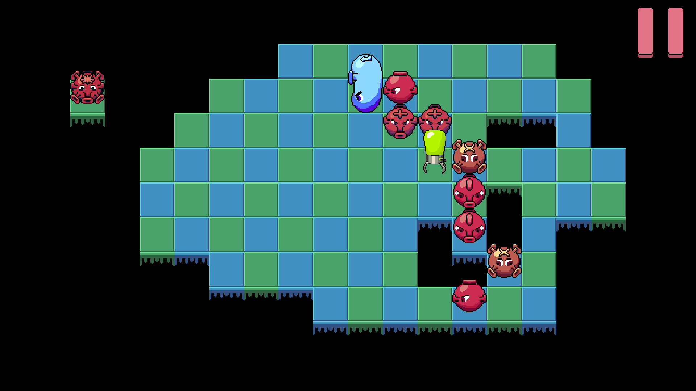

Antoni Climent
Game dev experience
16-07-2025
I never imagined that developing video games would feel this good. Just recently I participated in a Jam with my friend @Nekkabi, and had the opportunity to code for the first time in Godot. It is this open-source game engine that purist developers use to develop their indie games. I love the idea of using open-source software for developing, it creates an amazing network of people and reusable code that empowers every individual, but we will talk about it in a different post. I really enjoyed the experience of programming video games, it reminded me of web development, in the sense that you can see instantly on the screen the changes that you do in the code (unlike in AI development, where sometimes you have to go through various training epochs to see a metric number change a decimal point). It brings instant satisfaction and allows you to iterate fast, going for the next challenge. It wasn't an easy path though, the way Godot uses the scenes for everything was tricky to grasp at first. Not because of the concept, but because of the interface and the way scenes are displayed. Scenes are modular containers that hold everything: characters, animations, sounds, logic, etc, think of them as self-contained levels or components. Also, to run a specific part of the game, you first need to set the right scene as the entry point by selecting it in the left menu. At first, navigating the menus in Godot felt disorganized, but once you get used to it, it starts to make sense. We uploaded the video game in itch.io, a platform where developers can put their creations, and allow people to play it from the browser. You can try it here: https://nekkabi.itch.io/project-chain-healing. It is a puzzle game, where you are an antidote and have to move viruses and bacteria to start a chain explosion reaction, with the objective of exploding all the microbes. Here you can see a screenshot.

For now it has 15 levels, but we are planning on improving and uploading it to steam! I will keep you informed.
Introduction
15-07-2025
Hi, my name is Toni. In this blog I will put some thoughts and experiences, with also some technical posts related to artificial intelligence. I love all kinds of topics, from psychology to computer science, going through biology, chemistry, physics, mathematics, economy and more. I think that we are in a world too interesting to focus on a single topic to explore. I love reading, discovering new things and have deep conversations, and my hope is that I can transmit a little bit of my passion in this posts.